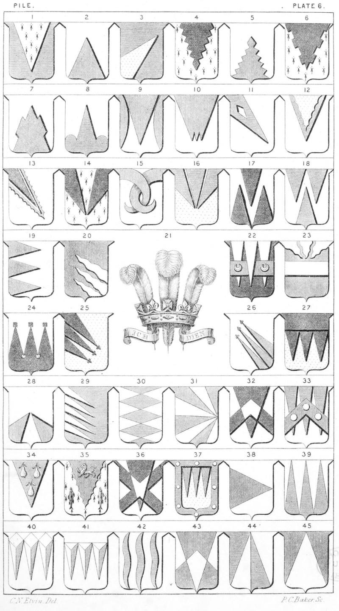

Plate 6.

Plate 6.
- Pile. Az. a pile erm.
- reversed or transposed
- Pile issuing out of dexter base, in point bendways, also termed a Pile inverted in bend sinister
- Pile indented
- Pile reversed, or transposed indented
- Pile embattled counter embattled
- Pile reversed fitched, or undee at top, raguly, or with a crenelle on each side
- Pile reversed goarée
- Pile and two demi piles embowed, or flanched, and fixed to the sides
- Pile Triple, or Triple-pointed
- Pile in point bendwise, pierced lozengy
- Pile charged with another engrailed
- Pile in bend issuing out of the dexter corner. Ar. a pile issuant from the dexter chief point sa. fimbriated and engrailed gu.
- Two Piles in point
- Two Piles embowed fretting each other
- Three Piles meeting in base, or three Piles in point
- Pile betw. two Piles reversed
- Pile transposed betw. two Piles
- Three Piles issuing from the dexter
barwise
- Three Piles wavy issuing out of sinister base in point bendways
- Badge of the Prince of Wales. A plume of three ostrich feathers argent, enfiled by a coronet composed of fleur-de-lis and crosses-pattee alternately gold, and on an escroll az. edged or the motto Ich Dien
- Three Piles, on a fesse surmounting the exterior ones, and debruised by the centre one, two crescents
- A fesse in chief three Piles wavy
- Pily counter-pily of seven traits (or pieces) the points ending in crosses pattee, three in chief and two in base
- Three Piles issuing from the dexter in bend on each point a fleur-de-lis
- A Pile triple, or triple-pointed in base bendwise, floried at the points
- Issuing from a chief three piles
- Two Piles reversed in point out of dexter and sinister base
- Five Piles issuing from dexter bendways
- Piles traversed, barwise
- Pily of eight, traverse in point to sinister fesse
- A Pile and cheveron countercharged
- Three Piles issuing from the chief, surmounted by a cheveron, charged with three plates
- On a Pile three pears slipped stalks upwards
- On a Pile engrailed betw. two fish hauriant, a lion passant
- Pile and Saltire countercharged. The blazon may be Ar. a Saltire sa. a pile countercharged
- Three Piles within a bordure, or three piles gu. within a bordure az. plattée
- Per-Pile traverse
- Paly-pily, or Pily-paly
- Pile square or tetragonell pyramid reversed
- Three Piles solid and triangular couped
- Piles fitched at the top also termed Piles wavy, fitched at both ends
- Per Pile and cheveron countercharged
- Per Pile reversed and per pale countercharged, or per pale and pile reversed countercharged
- Per Pile transposed